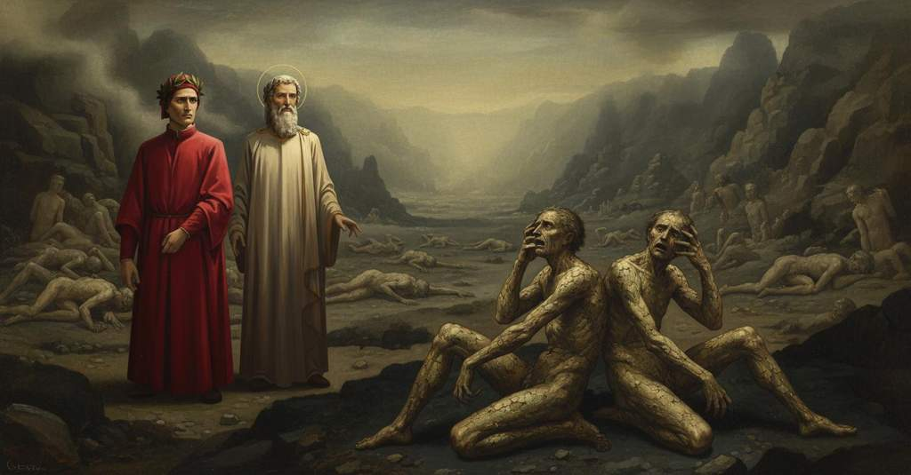

Inferno — Canto 29

Virgilio distoglie Dante dalla pena per Geri del Bello, poi i due raggiungono l'ultima bolgia, dove tra i falsatori malati incontrano Griffolino d'Arezzo e Capocchio, che denunciano con sarcasmo la vanità dei Senesi. Virgil draws Dante away from his pity for Geri del Bello, then the two reach the final ditch, where among the sick falsifiers they meet Griffolino of Arezzo and Capocchio, who sarcastically denounce the vanity of the Sienese. ウェルギリウスはジェーリ・デル・ベッロへのダンテの憐れみから彼を引き離し、その後二人は最後の濠に着き、そこで病む偽造者たちの中で、シエナ人の虚栄を皮肉に非難するアレッツォのグリッフォリーノとカポッキオに出会う。
1
La molta gente e le diverse piaghe
The many people and the diverse wounds
おびただしい人々とその様々な傷は
2
avean le luci mie sì inebrïate,
had so inebriated my eyes,
私の両眼をすっかり酔わせてしまい、
3
che de lo stare a piangere eran vaghe.
that they were eager to stay and weep.
立ち止まって泣きじゃくりたいほどであった。
4
Ma Virgilio mi disse: «Che pur guate?
But Virgil said to me: “Why do you still gaze?
だがウェルギリウスは私に言った、「なぜまだ見つめているのか？
5
perché la vista tua pur si soffolge
why does your sight still linger
なぜお前の視線はなおも釘付けになっているのか
6
là giù tra l’ombre triste smozzicate?
down there among the sad, mangled shades?
あの惨めに切り刻まれた悲しき亡霊たちに？
7
Tu non hai fatto sì a l’altre bolge;
You have not done so in the other pouches;
他の濠ではお前はそうではなかったぞ。
8
pensa, se tu annoverar le credi,
think, if you believe you can count them,
もし彼らを数えようと思うなら、考えよ、
9
che miglia ventidue la valle volge.
that the valley circles for twenty-two miles.
この谷は二十二マイルも巡っているのだ。
10
E già la luna è sotto i nostri piedi;
And already the moon is beneath our feet;
そして月はすでに我らの足下にある。
11
lo tempo è poco omai che n’è concesso,
the time is now short that is granted to us,
我らに許された時間はもはや僅かだ、
12
e altro è da veder che tu non vedi».
and there is more to see than what you see.”
そしてお前がまだ見ていないものがあるのだ」。
13
«Se tu avessi», rispuos’ io appresso,
“If you had,” I then replied,
「もしあなたが」と私はすぐに答えた、
14
«atteso a la cagion per ch’io guardava,
“attended to the reason for which I was looking,
「私がなぜ見ていたかの理由に気づいておられたなら、
15
forse m’avresti ancor lo star dimesso».
perhaps you would have yet permitted me to stay.”
おそらくは、なおも私が留まるのをお許しになったでしょう」。
16
Parte sen giva, e io retro li andava,
The guide was starting to leave, and I was going behind him,
導き手はすでに出発し、私はその後を追っていた、
17
lo duca, già faccendo la risposta,
already making my reply,
すでに返事をしながら、
18
e soggiugnendo: «Dentro a quella cava
and adding: “Within that hollow
そしてこう付け加えながら、「あの洞の内で
19
dov’ io tenea or li occhi sì a posta,
where I just now held my eyes so fixed,
今しがた私が目を凝らしていた場所に、
20
credo ch’un spirto del mio sangue pianga
I believe a spirit of my blood laments
私の血族の霊が一人、泣いているのだと思います
21
la colpa che là giù cotanto costa».
the sin that costs so much down there.”
あの世であれほど高くつく罪のために」。
22
Allor disse ’l maestro: «Non si franga
Then the master said: “Let not be broken
そのとき師は言った、「これより先、彼のことにお前は
23
lo tuo pensier da qui innanzi sovr’ ello.
your thought from now on over him.
考えを乱されるな。
24
Attendi ad altro, ed ei là si rimanga;
Attend to something else, and let him remain there;
他のことに心を向けよ、そして彼はそこに留まらせよ。
25
ch’io vidi lui a piè del ponticello
for I saw him at the foot of the little bridge
というのも私は彼が橋の袂で
26
mostrarti e minacciar forte col dito,
pointing at you and threatening fiercely with his finger,
お前を指さし、激しく指で脅すのを見たのだ、
27
e udi’ ’l nominar Geri del Bello.
and I heard him named Geri del Bello.
そして彼の名がジェーリ・デル・ベッロと呼ばれたのを聞いた。
28
Tu eri allor sì del tutto impedito
You were then so completely impeded
そのときお前はあまりに完全に心を奪われていた
29
sovra colui che già tenne Altaforte,
by him who once held Altaforte,
かつてアルタフォルテを領した者（ベルトラン・ダル・ボルニオ）に、
30
che non guardasti in là, sì fu partito».
that you did not look that way, so he departed.”
そちらを見なかったので、彼は去ってしまったのだ」。
31
«O duca mio, la vïolenta morte
“O my duke, the violent death
「おお、我が導き手よ、その非業の死が
32
che non li è vendicata ancor», diss’ io,
which is not yet avenged for him,” I said,
まだ復讐されていないことが」と私は言った、
33
«per alcun che de l’onta sia consorte,
“by anyone who is a consort of the shame,
「その不名誉を分かち合う誰によっても、
34
fece lui disdegnoso; ond’ el sen gio
made him disdainful; whence he went away
彼を憤らせたのです。それゆえ彼は去ったのです
35
sanza parlarmi, sì com’ ïo estimo:
without speaking to me, as I judge:
私に話しかけることもなく、と私は推測します。
36
e in ciò m’ha el fatto a sé più pio».
and in this he has made me more pious toward him.”
そしてそのことで、彼は私を彼に対し一層憐れみ深くさせたのです」。
37
Così parlammo infino al loco primo
Thus we spoke up to the first place
このように我らは最初の場所まで語り合った、
38
che de lo scoglio l’altra valle mostra,
that from the cliff shows the other valley,
その岩棚から次の谷が見渡せる、
39
se più lume vi fosse, tutto ad imo.
if there were more light, to its very bottom.
もっと光があれば、その底まで全て。
40
Quando noi fummo sor l’ultima chiostra
When we were above the last cloister
我らがマーレボルジェの最後の濠の上に着いた時、
41
di Malebolge, sì che i suoi conversi
of Malebolge, so that its inhabitants
その修練者たちが
42
potean parere a la veduta nostra,
could appear to our sight,
我らの視界に現れることができるようになると、
43
lamenti saettaron me diversi,
diverse laments shot at me,
様々な嘆きが私に矢のように突き刺さり、
44
che di pietà ferrati avean li strali;
which had their arrows barbed with pity;
その矢は憐れみを鏃としていた。
45
ond’ io li orecchi con le man copersi.
wherefore I covered my ears with my hands.
ゆえに私は両手で耳を覆った。
46
Qual dolor fora, se de li spedali
What sorrow it would be, if from the hospitals
どんな苦痛であろうか、もしヴァルディキアーナの
47
di Valdichiana tra ’l luglio e ’l settembre
of Valdichiana between July and September
七月から九月の間の、またマレンマとサルデーニャの
48
e di Maremma e di Sardigna i mali
and of Maremma and of Sardinia the sick
病院の病という病が
49
fossero in una fossa tutti ’nsembre,
were all together in one ditch,
一つの穴に全て集められたとしたら、
50
tal era quivi, e tal puzzo n’usciva
such it was here, and such a stench came from it
ここはそのような状態で、そのような悪臭が立ち上っていた
51
qual suol venir de le marcite membre.
as is wont to come from rotted limbs.
腐敗した四肢から立ち上るような。
52
Noi discendemmo in su l’ultima riva
We descended onto the last bank
我らは長い岩棚の最後の岸辺へと下りていった、
53
del lungo scoglio, pur da man sinistra;
of the long cliff, still on the left hand;
やはり左手の方へ。
54
e allor fu la mia vista più viva
and then my sight was more alive
そしてその時、私の視力はより鋭くなった
55
giù ver’ lo fondo, la ’ve la ministra
down toward the bottom, there where the minister
底の方へ向かって、そこではいと高き主の
56
de l’alto Sire infallibil giustizia
of the high Lord, infallible justice,
遣いである、誤ることなき正義が
57
punisce i falsador che qui registra.
punishes the falsifiers whom she registers here.
ここに記録された偽造者たちを罰している。
58
Non credo ch’a veder maggior tristizia
I do not believe that to see greater sadness
これほど大きな悲惨さを見ることはなかったと思う
59
fosse in Egina il popol tutto infermo,
was in Aegina the whole populace sick,
エギナ島で民がことごとく病んだ時も、
60
quando fu l’aere sì pien di malizia,
when the air was so full of malice,
大気があまりに悪意に満ちていたために、
61
che li animali, infino al picciol vermo,
that the animals, down to the little worm,
動物たちは、小さな蛆虫に至るまで、
62
cascaron tutti, e poi le genti antiche,
all fell, and then the ancient people,
皆倒れてしまい、そしてその後、古の人々は、
63
secondo che i poeti hanno per fermo,
according to what the poets hold for certain,
詩人たちが確かなこととして伝えているように、
64
si ristorar di seme di formiche;
were restored from the seed of ants;
蟻の種から蘇ったのだが。
65
ch’era a veder per quella oscura valle
than it was to see through that dark valley
その暗い谷間で見る光景は
66
languir li spirti per diverse biche.
the spirits languishing in diverse heaps.
様々な山をなして衰弱する魂たちだったからだ。
67
Qual sovra ’l ventre e qual sovra le spalle
One on its belly and one on the shoulders
ある者は腹ばいに、ある者は背中合わせに
68
l’un de l’altro giacea, e qual carpone
of another lay, and one on all fours
互いに横たわり、ある者は四つん這いになって
69
si trasmutava per lo tristo calle.
moved itself along the sad path.
その悲しい道を進んでいた。
70
Passo passo andavam sanza sermone,
Step by step we went without a word,
我らは一歩一歩、言葉もなく進み、
71
guardando e ascoltando li ammalati,
watching and listening to the sick ones,
病人たちを見、そして聞きながら、
72
che non potean levar le lor persone.
who could not lift their persons.
彼らは自らの身を起こすことができなかった。
73
Io vidi due sedere a sé poggiati,
I saw two sitting propped against each other,
私は二人が互いに寄りかかって座っているのを見た、
74
com’ a scaldar si poggia tegghia a tegghia,
as pan is propped on pan to be heated,
温めるために鍋と鍋を寄りかからせるように、
75
dal capo al piè di schianze macolati;
spotted from head to foot with scabs;
頭から足まで瘡蓋でまだらになっていた。
76
e non vidi già mai menare stregghia
and I never saw a currycomb plied
そして私は、馬櫛をこれほど動かすのを見たことがない
77
a ragazzo aspettato dal segnorso,
by a stable-boy awaited by his master,
主人に待たされている馬丁や、
78
né a colui che mal volontier vegghia,
nor by one who unwillingly keeps watch,
いやいやながら夜番をする者によっても、
79
come ciascun menava spesso il morso
as each one often plied the bite
彼ら一人一人が、爪の噛みつきを
80
de l’unghie sopra sé per la gran rabbia
of his nails upon himself for the great rage
激しい痒みの怒りのために、自らの上に頻繁に動かすほどには。
81
del pizzicor, che non ha più soccorso;
of the itching, which has no other help;
その痒みには、もはや何の助けもない。
82
e sì traevan giù l’unghie la scabbia,
and so the nails dragged down the scabs,
そして爪は、その疥癬を掻きむしっていた、
83
come coltel di scardova le scaglie
as a knife does the scales of a shad
ちょうどナイフがスカルドヴァの鱗を
84
o d’altro pesce che più larghe l’abbia.
or of another fish that has them larger.
あるいはもっと大きな鱗を持つ他の魚のそれを剥ぐように。
85
«O tu che con le dita ti dismaglie»,
«O you who with your fingers dismantle yourself»,
「おお、汝、指にてその身を掻きむしる者よ」
86
cominciò ’l duca mio a l’un di loro,
began my leader to one of them,
私の導き手は、彼らの一人に向かって語り始めた、
87
«e che fai d’esse talvolta tanaglie,
«and who make of them sometimes pincers,
「そしてその指を、時にはやっとこのように使う者よ、
88
dinne s’alcun Latino è tra costoro
tell us if any Italian is among these
我らに告げよ、この中にイタリア人はいるか
89
che son quinc’ entro, se l’unghia ti basti
who are here within, if your nail suffices
ここにいる者たちの中に。汝の爪がその仕事に
90
etternalmente a cotesto lavoro».
eternally for that work».
永遠に耐えうるようにと願うならば」。
91
«Latin siam noi, che tu vedi sì guasti
«Italians are we, whom you see so ravaged
「我らはイタリア人、あなたが見るとおりこのように傷つけられた
92
qui ambedue», rispuose l’un piangendo;
here both of us», one answered weeping;
ここにいる二人とも」と一人が泣きながら答えた。
93
«ma tu chi se’ che di noi dimandasti?».
«but who are you who asked about us?».
「しかし、我らのことを尋ねたあなたは誰ですかな？」。
94
E ’l duca disse: «I’ son un che discendo
And the leader said: «I am one who descends
そして導き手は言った、「私は、この生者と共に
95
con questo vivo giù di balzo in balzo,
with this living man down from ledge to ledge,
崖から崖へと下りて来た者であり、
96
e di mostrar lo ’nferno a lui intendo».
and I intend to show him Hell».
彼に地獄を見せるつもりなのだ」。
97
Allor si ruppe lo comun rincalzo;
Then their common propping broke;
すると、互いに寄りかかる体勢が崩れた。
98
e tremando ciascuno a me si volse
and trembling each one turned to me
そして、各々が震えながら私の方を向いた、
99
con altri che l’udiron di rimbalzo.
with others who heard it on the rebound.
その言葉を間接的に聞いた他の者たちと共に。
100
Lo buon maestro a me tutto s’accolse,
The good master drew all near to me,
善き師は、私の方にすっかり身を寄せ、
101
dicendo: «Dì a lor ciò che tu vuoli»;
saying: «Tell them what you wish»;
言った、「彼らに汝が望むことを言うがよい」。
102
e io incominciai, poscia ch’ei volse:
and I began, since he willed it:
師がそう望まれたので、私は口を開いた。
103
«Se la vostra memoria non s’imboli
«So may your memory not be stolen
「もしあなた方の記憶が、最初の世界で
104
nel primo mondo da l’umane menti,
in the first world from human minds,
人々の心から盗み去られることなく、
105
ma s’ella viva sotto molti soli,
but may it live under many suns,
多くの太陽の下で生き続けるのであれば、
106
ditemi chi voi siete e di che genti;
tell me who you are and of what people;
私に告げてください、あなた方が誰で、どこの民であるかを。
107
la vostra sconcia e fastidiosa pena
let not your foul and loathsome penalty
あなた方のこの醜く、忌まわしい罰が
108
di palesarvi a me non vi spaventi».
frighten you from revealing yourselves to me».
私に正体を明かすことを妨げませんように」。
109
«Io fui d’Arezzo, e Albero da Siena»,
«I was from Arezzo, and Albero of Siena»,
「私はアレッツォの出身で、シエナのアルベーロが」
110
rispuose l’un, «mi fé mettere al foco;
answered one, «had me put to the fire;
と一人が答えた、「私を火刑に処させた。
111
ma quel per ch’io mori’ qui non mi mena.
but that for which I died does not bring me here.
だが、私が死んだその罪ゆえにここにいるのではない。
112
Vero è ch’i’ dissi lui, parlando a gioco:
True it is that I told him, speaking in jest:
実は、私は彼に冗談でこう言ったのだ、
113
“I’ mi saprei levar per l’aere a volo”;
“I would know how to raise myself through the air in flight”;
『私は空を飛ぶことができる』と。
114
e quei, ch’avea vaghezza e senno poco,
and he, who had desire and little sense,
すると彼は、欲望ばかりで分別に乏しく、
115
volle ch’i’ li mostrassi l’arte; e solo
wished that I should show him the art; and only
私にその術を見せるよう望んだ。そしてただ
116
perch’ io nol feci Dedalo, mi fece
because I did not make him Daedalus, he had me
私が彼をダイダロスにしなかったという理由で、
117
ardere a tal che l’avea per figliuolo.
burned by one who held him as a son.
彼を息子としていた者に、私を焼かせたのだ。
118
Ma ne l’ultima bolgia de le diece
But to the last pouch of the ten
だが、十の濠の最後の濠に、
119
me per l’alchìmia che nel mondo usai
for the alchemy that I practiced in the world
私を、この世で行った錬金術の罪のために
120
dannò Minòs, a cui fallar non lece».
Minos, who cannot err, condemned me».
裁きを誤ることのないミノスが断罪したのだ」。
121
E io dissi al poeta: «Or fu già mai
And I said to the poet: 'Was there ever
そこで私は詩人に言った、「さて、これまでにいたでしょうか
122
gente sì vana come la sanese?
a people so vain as the Sienese?
シエナ人ほど虚栄心の強い民族が？
123
Certo non la francesca sì d’assai!».
Certainly the French are not so by far!'.
確かにフランス人でさえ、これほどではありますまい！」と。
124
Onde l’altro lebbroso, che m’intese,
Whereupon the other leper, who heard me,
すると、もう一人の癩病者が、私に聞きつけて、
125
rispuose al detto mio: «Tra’mene Stricca
replied to my speech: 'Except from them Stricca
私の言葉に答えた、「その中からストリッカは除いてくれ、
126
che seppe far le temperate spese,
who knew how to make temperate expenses,
彼は節度ある出費を心得ていたのだから。
127
e Niccolò che la costuma ricca
and Niccolò who the rich custom
そしてニッコロも、彼は高価な習慣である
128
del garofano prima discoverse
of the clove first discovered
クローブを初めて世に広めた男だ、
129
ne l’orto dove tal seme s’appicca;
in the garden where such seed takes root;
そのような種が根付く畑で。
130
e tra’ne la brigata in che disperse
and except the company in which Caccia
そしてあの放蕩組も除いてくれ、そこで
131
Caccia d’Ascian la vigna e la gran fonda,
d’Asciano squandered the vineyard and the great woods,
アシャーノのカッチャは葡萄畑と広大な森を散財し、
132
e l’Abbagliato suo senno proferse.
and the Abbagliato showed off his judgment.
そして『アッバリアート』はその分別を披露したのだ。
133
Ma perché sappi chi sì ti seconda
But so you may know who so seconds you
だが、誰がシエナ人に反対して
134
contra i Sanesi, aguzza ver’ me l’occhio,
against the Sienese, sharpen your eye toward me,
かくもあなたに同調するのか知るために、私に目を凝らすがいい、
135
sì che la faccia mia ben ti risponda:
so that my face may answer you well:
そうすれば私の顔が、よくあなたに答えてくれるだろう。
136
sì vedrai ch’io son l’ombra di Capocchio,
you will see that I am the shade of Capocchio,
そうすれば分かるだろう、私がカポッキオの亡霊であることが。
137
che falsai li metalli con l’alchìmia;
who falsified metals with alchemy;
私は錬金術で金属を偽造したのだ。
138
e te dee ricordar, se ben t’adocchio,
and you must recall, if I eye you well,
そしてあなたは思い出すはずだ、もし私がよくあなたを見定めれば、
139
com’ io fui di natura buona scimia».
how I was a good ape of nature'.
私がいかに自然を巧みに模倣する猿であったかを」。